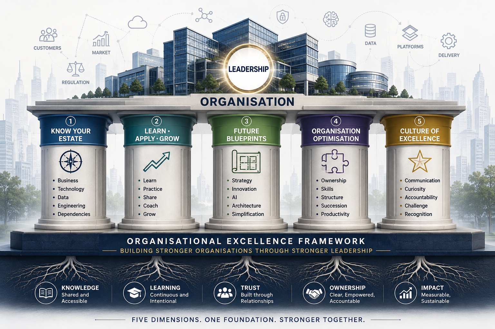

A Conversation, Not a Solution
Over the last few months, I've been reflecting on a simple question: if every leader could intentionally strengthen just a handful of dimensions, what would they be?
That thinking led to the five pillars you're about to navigate.

Navigation · Five Pillars
Know Your Estate
You reflected on this — organisational growth & complexity
- Business
- Technology
- Architecture
- Data
- Engineering
- Ownership
- Dependencies
What it means: Building deep organisational knowledge — understanding our products, business, architecture and engineering estate as a shared asset, not something that lives only in a few people's heads.
How we'll get there: Establishing structured, regular coaching across the team, so expertise in the business, architecture and engineering domains is actively built and shared — not left to informal ownership.
Learn • Apply • Grow
You reflected on this — continuous evolution
- Curiosity
- Learning
- Practice
- Sharing
- Coaching
- Expertise
- Growth
What it means: Learning new skills in direct response to what our projects demand — for example Data and AI — so the organisation builds the expertise it actually needs.
How we'll get there: Actively encouraging people toward new skills and new project exposure, and ensuring projects allow proper time for that learning rather than treating it as an afterthought.
Future Blueprints
You reflected on this — building tomorrow
- Vision
- Innovation
- AI
- Simplification
- Modernisation
- Strategy
What it means: Defining the technology and operational blueprints for the organisation's future state — a clear, shared picture of where architecture and operations are heading.
How we'll get there: Our architecture team spending time with Propositions, Business Operations and other stakeholders to co-create these blueprint drafts, rather than defining them in isolation.
Organisation Optimisation
You reflected on this — understanding the organisation
- Ownership
- Capability
- Capacity
- Resilience
- Succession
- Balance
What it means: Clear roles and responsibilities, with skills and capability optimally distributed across every discipline, so no single area is overloaded or under-resourced.
How we'll get there: Regularly reviewing role clarity and skill distribution across the organisation, rebalancing capacity where needed and planning succession deliberately rather than leaving it to chance.
Culture of Excellence
You reflected on this — organisation & culture
- Communication
- Challenge
- Trust
- Leadership
- Recognition
- Accountability
What it means: Trust, constructive challenge and recognition, practised daily as part of how the organisation works — not values printed on a poster.
How we'll get there: Making constructive challenge a normal part of everyday conversations, and consistently recognising the behaviours that reflect the culture we want.
Commitment
What every leader can choose to do
Understand beyond your immediate team.
Create future experts, not future dependencies.
Invest in tomorrow while delivering today.
Leave every team stronger than you found it.
Build excellence through everyday behaviours.
The strongest organisations
don't become excellent by accident.
They become excellent because their leaders
choose to build them that way.
Five dimensions. One foundation. Stronger together.